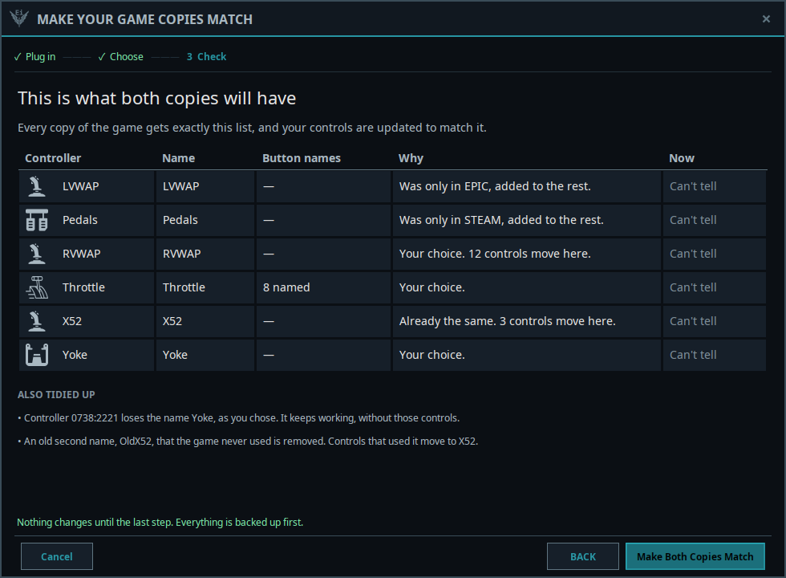

Установка
Elite Intel V1.2 — текущая версия.
 Linux Windows
Linux Windows
- Скачайте 👉установщик👈.
- Запустите установщик и следуйте инструкциям на экране.
- Настроить языковую модель. Без неё Elite Intel не работает. Два варианта:
- Локальная LLM (бесплатно, офлайн): см. руководство по локальной LLM. Требуется производительная видеокарта.
- Облачная LLM (платно, настроить проще): см. Варианты облачных LLM, чтобы получить API-ключ, а затем введите его в Сервисы → Сервисы ИИ.
Установка завершена. Далее: интерфейс, вкладка за вкладкой.
Контрольный список первого запуска
При старте сервисов Elite Intel произносит эти предупреждения вслух, так что вы услышите обо всём, чего не хватает, — но лучше сделать это заранее:
| Шаг | Где |
|---|---|
| Указать языковую модель | Сервисы → Сервисы ИИ |
| Проверить папку журнала | Вкладка «Командир» |
| Дать BindForge настроиться и выдать «Веге» нужные клавиши | Вкладка BindForge |
| Откалибровать звук | Вкладка «Вега» → КАЛИБРОВКА ЗВУКА |
Что Elite Intel настраивает за вас
Три вещи, которые стоит знать перед началом на свежей установке.
LM Studio, установленный за вас
Если LM Studio нужен только для Elite Intel, дайте Elite Intel установить его. Это рекомендуемый способ. Нажмите Установить LM Studio в Сервисы → Сервисы ИИ → LMStudio. Elite Intel установит LM Studio, скачает и загрузит модель, проверит её и заполнит Адрес и Модель за вас. Дальше он запускает LM Studio вместе со своими сервисами и останавливает, когда вы их останавливаете или закрываете приложение, так что модель занимает память видеокарты, только пока работает Elite Intel. Удалить LM Studio убирает его.
Кнопка появляется, только если ваши видеокарты вмещают игру и модель одновременно: NVIDIA RTX 3090 на 24 ГБ или лучше, две новые карты NVIDIA примерно с 20 ГБ на двоих или карты AMD с такой же памятью, в бета-режиме. Подробности — в руководстве по локальной LLM. Если вы используете LM Studio ещё для чего-то, установите его сами: тогда Elite Intel только добавит модель и заполнит поля, и никогда не будет запускать, останавливать или удалять ваш LM Studio.
Ваш HOTAS, джойстики и педали
Когда вы впервые открываете вкладку BindForge, она делает резервную копию файлов управления, находит каждую копию игры на этом ПК и смотрит, что подключено. Изначально игра знает многие контроллеры только по аппаратному идентификатору. BindForge предлагает каждому контроллеру без имени настоящее, например Throttle или Pedals, и этот шаг можно Пропустить.

Позже в Конструкторе псевдонимов нажмите шестерёнку контроллера, чтобы подписать его кнопки, оси и хатки. Нажмите кнопку — и её поле подсветится, так что видно, какая есть какая. Подписи появляются на экране управления в игре и в редакторе привязок.

Игра из нескольких магазинов
У вас Elite Dangerous и в Steam, и в Epic? Все копии используют общее управление, но каждая хранит свой список ваших контроллеров и названий кнопок. Когда списки расходятся, управление может работать в одной копии и сбрасываться на клавиатуру и мышь в другой. BindForge замечает это при первом открытии и предлагает Согласовать копии игры:

- Подключить — подключите контроллеры, на которых летаете. Нажмите кнопку — и её строка подсветится.
- Выбрать — ответьте на несколько коротких вопросов, например какое имя оставить контроллеру, который каждая копия называет по-своему. Ваше управление последует за выбранным именем. Слишком много вопросов? Сделать всё как в одной из моих копий... настроит всё так, как в копии, в которую вы играете больше всего.
- Проверить — посмотрите, что именно получит каждая копия и почему, прежде чем что-то изменится.

До последнего шага ничего не меняется, а всё сначала копируется. Не сейчас оставляет файлы как есть. Если позже файлы управления одной копии изменятся, например после обновления игры, BindForge спросит только Какая настройка актуальна? и согласует остальные.
Впервые в Elite Dangerous?
Игра создаёт файлы управления только после того, как вы что-то изменили, а без них Elite Intel не может управлять кораблём. Пройдите обучение командира, затем в игре в разделе Настройки → Управление назначьте движение интерфейса галактической карты на клавиши со стрелками и примените.
Переход на другой компьютер
Резервная копия на вкладке «Сервисы» сохраняет настройки, данные и пользовательские команды в один файл, который можно восстановить на новом компьютере.
Удаление (Linux)
~/.var/app/elite.intel.app/uninstall
При возникновении проблем нажмите Сообщить об ошибке на вкладке «Вега»: описание уйдёт прямо команде, аккаунт не нужен. Чтобы пообщаться с нами, присоединяйтесь к сообществу в Matrix с бесплатным аккаунтом. Лучше всего приложение Element, но для быстрого разговора подойдёт любой современный браузер. Отчёты об ошибках и pull request'ы приветствуются.
Сообщество 👉Matrix👈